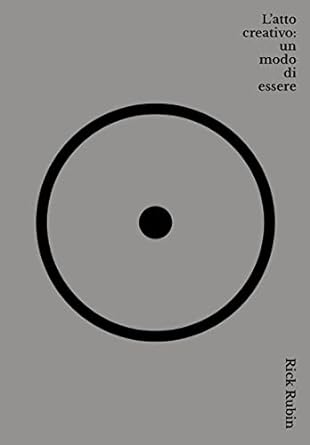

3.3.4 — Arte, previsioni e futuro
La creatività, in questo contesto, diventa una competenza di sopravvivenza. Henri Poincaré e Graham Wallas hanno descritto il processo creativo in quattro fasi: preparazione, incubazione, illuminazione, verifica. Il podcast Song Exploder[40], dove i musicisti smontano le loro canzoni pezzo per pezzo e raccontano come sono nate, ne è un archivio. L'AI può accelerare la preparazione e automatizzare la verifica, ma l'incubazione — quel momento in cui la mente vaga senza scopo e le connessioni emergono — resta irriducibilmente umana (🖼️ ff.18.3 L’arte, tra intelligenza artificiale e l’uomo). DALL-E ha generato il volto di Shakespeare. Un algoritmo ha ricostruito il busto di Nefertiti in 3D. Ma l’atto creativo comincia dalla domanda che precede l’oggetto (🎭 ff.18.5 Dipinti ricreati da intelligenza artificiale). Rick Rubin, in The Creative Act, definisce la creatività come “un modo di essere nel mondo”, non una competenza tecnica. Il “vibe coding” — programmare guidati dall'intuizione piuttosto che dalla logica — è la traduzione tecnologica di questo principio (🤘 ff.127.2 Rock ‘n’ roll e vibe coding).

L’arte generativa non è per forza slop, scriveva la newsletter: con un po’ di gusto, e di genio, permette cose del tutto nuove. Lo studio Modem ha progettato un apparecchio da comodino, il Dream Recorder: al risveglio gli si racconta il sogno a voce e lui lo rimette in immagini[24] a bassissima definizione, con un’estetica sviluppata insieme all’artista Alexis Jamet. Per Modem l’AI generativa si presta ai sogni perché «allucina per costruzione», e l’immagine viene degradata apposta, perché non sogniamo in alta definizione. Nell’agosto 2026 Oio e Mattering hanno presentato Mur Mur[25], tecnicamente uno speaker portatile: invece di generare suoni simula un piccolo mondo, uno stagno, un angolo di piante o un isolato di città, con aironi e lontre o venditori e skater, e quello che si sente sono le loro vite. Dentro ci sono 300.000 effetti sonori fatti su misura, e se lo si scuote gli abitanti si agitano. Un Tamagotchi? (🌱 ff.153.3 Un terrario portatile).
Con la musica il passo è già fatto. Drake AI, un gemello digitale del cantante con la voce replicata dall’AI, ha pubblicato il suo primo album, Better Late Than Never, e il sito AI Hits tiene una classifica delle canzoni di artisti AI[26]; nel titolo del noto tormentone estivo, notava la newsletter, l’AI c’era già (🎶 ff.63.4 Ai se eu te pego?). Quello che lascia un artista in carne e ossa si legge nel dominio interminabile della fondazione di Oliver Tree, morto dopo un volo in elicottero andato male: DrOliverTreesExtremelyEpicArtGrantForBabyGeniuses.com[27]. I fondi vengono dai beni non legati all’arte che lui stesso aveva indicato di vendere, devono durare almeno 50-100 anni e pagano solo la produzione di opere di musica, cinema, installazione e performance, mai la scuola: Oliver credeva che un artista impari il mestiere sporcandosi le mani più che studiando (🤠 ff.152.4 Oliver, davvero?).
Shri Khalpada, ingegnere del software che suona la chitarra da vent’anni, ha provato a capire perché la musica generata lo turbi, e si è chiesto se la musica sia solo suono[44]. I numeri che raccoglie dicono che la domanda è già concreta: nell’estate 2026 su Deezer arrivavano ogni giorno 90.000 brani interamente generati, oltre la metà dei caricamenti quotidiani, e Sienna Rose, un’«artista» neo-soul senza profili social né concerti, ha superato i 3 milioni di ascoltatori mensili su Spotify con brani che Deezer ha confermato essere tutti generati. Le piattaforme si dividono: Bandcamp li vieta, Deezer li etichetta e li toglie dai suggerimenti, Spotify li raccomanda accanto agli artisti veri. Strumenti come Suno avevano già scritto le musiche gospel della prima «messa generativa» (🙏 ff.119.2 Se il prete è un’AI). Matthew Wilcock fa il percorso inverso e traduce in musica e suoni ambient[45] i pattern di tutti i giorni: le auto in autostrada, una partita di ping pong, le nuvole che passano.
Lo stesso gesto torna nell’animazione. Ramin Rahni, biologo di formazione, dipinge con un sintetizzatore analogico[46]: un modulare LZX genera forme e mescola colori, e ne escono «dipinti» digitali pieni di glitch, spesso su geometrie islamiche che vengono dalla sua infanzia in Iran. A Milano Stefano Colferai anima la plastilina a passo uno[47]: ha cominciato dieci anni fa perché, racconta, era troppo pigro per imparare i software 3D, e oggi muove i personaggi fotogramma per fotogramma per raccontare le piccole imperfezioni di ogni giorno, dalle dita nel naso alla paura di restare esclusi; «dopo qualche fotogramma vedi muoversi tutto quello che hai creato con le mani». A Tokyo Shotaro Kitada costruisce scene di carta[48] che molti scambiano per stop motion e sono invece teatro di figura, mosso da fili e motori per uno stile «goffo, non così perfetto». È il rovescio delle immagini nate dalla sola descrizione in forma di testo, che la newsletter trovava suggestive negli oggetti di An Improbable Future (🔮 ff.40.2 Un futuro parallelo di design).
Riprendendo ff.127.2, quando parlavamo del vibe coding come rock ’n’ roll della programmazione, lo stesso autore di questa newsletter confessa apertamente la propria ossessione. Nell’uscita Grazie per tutto il pesce — la citazione di Douglas Adams che chiude Guida galattica per gli autostoppisti — Michele ammette di essere letteralmente risucchiato dalle potenzialità di Claude Code, l’ambiente agentico di Anthropic. La cornice biografica è densa e conta: una maratona a Roma, un Ironman a Francoforte a tre mesi di distanza, il lavoro, le relazioni. In mezzo, una domanda editoriale onesta: ha ancora senso, questa newsletter? La domanda è la stessa che, tre anni prima, Ivan Mistrik si era posto studiando venticinque anni di consumi di uova[2]: dati, grafici, micro-serie storiche raccolte dal dopoguerra. Di quella disciplina Michele intuisce l’obsolescenza: se Claude Code prende un podcast e lo trasforma in un ff.x.y in pochi minuti, il collo di bottiglia diventa il gusto. La newsletter cambia di ruolo. Da registro di spunti diventa registro di giudizi — e questo paragrafo che state leggendo è un’autoconferma recursiva. Come argomentato in ff.127.4 (Palantir, umanesimo e Silicon Valley), la terza via è restituire alla macchina una direzione. Grazie per il pesce, appunto (🏺 ff.147.1 Passato fortissimo).
A volte l’incubazione creativa di cui parlano Poincaré e Wallas nasce dal lutto. Il New York Times ha provato a visualizzare il milione di morti per COVID negli Stati Uniti usando pixel: ogni puntino, una vita umana. Abituati a essere investiti da miliardi di miliardi di pixel ogni giorno — banner, notifiche, feed — fermarsi su ogni puntino nero e dedicargli il tempo necessario è difficilissimo. Ma il giornale ce lo chiede. Una pagina interattiva distribuisce i pixel verticalmente per giorni mostrando la progressione della pandemia; un’altra divide per età: 650.000 sopra i 65 anni. Il dato è già passato per le statistiche; il NYT lo rimette nel registro dell’esperienza. Come Duchamp con l’orinatoio, il giornale con i pixel: il gesto artistico non aggiunge informazioni, modifica l’attenzione. E dopo ogni pandemia, l’attenzione è la risorsa più scarsa (⚈ ff.27.1 I pixel del New York Times).
E Axios ha scelto un’altra strada: lo scroll. Una pagina in cui, scrollando, si accumulano i morti, con un grafico che cresce nell’angolo mano a mano che il dito si muove sullo schermo. A gennaio 2021, gli Stati Uniti hanno raggiunto il numero di morti della Seconda guerra mondiale; a settembre 2021, il milione della pandemia del 1918. Normalizzando per popolazione — triplicata dal 1918 — un milione e mezzo di morti COVID produrrebbe una mortalità percentuale pari a quella spagnola. Axios ha trasformato il gesto del doomscrolling — l’atto emblematico dell’ansia digitale — nel suo opposto: uno scroll intenzionale, dove ogni centimetro è un tributo. La differenza è cognitiva: il pixel del NYT chiede lentezza, lo scroll di Axios chiede consapevolezza del proprio gesto. Entrambi rovesciano la logica del feed: lo scroll diventa atto memoriale (🖱 ff.27.2 Scroll e morti).
La morte contata su una mappa ha anche una versione medievale. Il criminologo Manuel Eisner, all’Istituto di criminologia dell’Università di Cambridge, ha messo in rete con il suo gruppo le mappe interattive degli omicidi[34] di Londra, York e Oxford nel Trecento: ogni puntino è un caso, raccontato dai verbali del coroner, la giuria che indagava sulle morti violente o improvvise. Per Londra i rotoli sopravvissuti coprono nove anni fra il 1300 e il 1340, e la mappa principale conta 142 omicidi in una città di 80-100.000 abitanti. Anche il giornalismo di oggi guarda dall’alto: Robert Simmon, su Nightingale, racconta come i satelliti siano diventati uno strumento dei giornalisti dopo che, nel 2008, l’intero archivio Landsat è stato reso gratuito[35], quando ogni immagine costava migliaia di dollari.
Da Bergamo un’altra risposta artistica al presente digitale. Salto nel vuoto è stata la mostra della GAMeC nell’anno in cui Bergamo e Brescia erano Capitali italiane della cultura. Il filo conduttore: la smaterializzazione/digitalizzazione dell’arte, dell’essere, della vita. Metaverso, NFT, arte generativa: la retrospettiva li ha trattati come capitoli di una lunga interrogazione filosofica sull’essere e il non-essere, sul pieno e sul vuoto. Millenni di riflessioni su materia e antimateria approdano, nella mostra, al pixel e al token. Il vuoto digitale è potenzialità programmabile: una tela bianca dove la fisica quantistica incontra il linguaggio del codice. Come per i pixel del NYT, non si aggiunge contenuto: si sposta l’attenzione su ciò che il contenuto presuppone. La riflessione sul vuoto è una pratica anti-overload perfetta per il 2026 (🔦 ff.64.1 La mostra sul vuoto).
La fotografia ha la sua versione della domanda. George Byrne scatta su pellicola di medio formato con una Pentax 67, poi ritaglia e ricompone le foto di Los Angeles in «paesaggi di sogno» dai pastelli slavati[49], come quelli della serie Synthetica, che vengono spesso scambiati per immagini fatte con l’AI. Byrne ha dato il nome alla serie un anno prima dei grandi progressi dell’AI, e dice che il suo lavoro le somiglia un po’, «ma è fatto con un cervello umano, per ora»; una composizione può richiedere mesi, a volte anni. Anche Simone Morelli fotografa su pellicola[50] e cita la frase di Seneca sul viaggio: «mutano i cieli sotto i quali ti trovi, ma non la tua situazione interiore». La newsletter aveva fatto lo stesso elogio dell’analogico con un CD comprato al prezzo di un mese di Spotify e spremuto per mesi in macchina (💿 ff.72.2 Ascoltare un CD).
Nell’attesa della nuova sede, la GAMeC è uscita dalle sue sale. Con Pensare come una montagna – Il Biennale delle Alpi Orobie, ideato dal direttore Lorenzo Giusti, il museo ha portato opere e artisti sul territorio, in una biennale distesa su due anni e costruita insieme ai cittadini e alle comunità. Al quinto e ultimo ciclo, nel novembre 2025, gli eventi erano ventitré contro i venti annunciati[41]. In una stalla della Val Taleggio, dopo una residenza, Gaia Fugazza ha messo in ginocchio Mother of Millions, una grande scultura in argilla di Impruneta lasciata grezza, che rovescia la logica del monumento; alla Fondazione Dalmine c’è un’installazione di Abraham Cruzvillegas.
E se Duchamp presentava l’orinatoio come scultura, il collettivo inglese Rankin ha ribaltato il gioco un secolo dopo. L’esposizione Best Seat in the House trasforma tavolette del WC in tele artistiche. Il motivo è sorprendentemente serio, la campagna di WaterAid: una persona su cinque al mondo non ha un cesso. La campagna promuove l’igiene globale. “Toilets can make us feel a little uncomfortable. Using the toilet seat as a canvas is an accessible and engaging way to put the spotlight on toilets and get people talking about them”, dice Rankin. Duchamp provocava rimuovendo l’oggetto dal suo contesto d’uso; Rankin provoca facendolo tornare al suo contesto con una missione umanitaria. Il gesto è in continuità con Perfect Days di Wenders (🚽 ff.108.4 L’arte nei cessi): la sacralità si annida dove meno te l’aspetti, purché qualcuno si fermi a guardare davvero (🚽 ff.18.2 Cessi artistici).
La pubblicità, del resto, è diventata essa stessa un formato artistico riconosciuto. VanMoof — l’azienda olandese di bici elettriche che ha raggiunto lo status di “Tesla della bicicletta” — ha commissionato all’animatore di Isle of Dogs, film di Wes Anderson, il suo spot sulla sicurezza anti-furto. Il risultato è un corto di stop-motion con la simmetria maniacale e i pastelli sbiaditi della cinematografia di Anderson. Per una bici elettrica. La pubblicità come commissione autoriale esiste da tempo e segnala una convergenza: i brand acquistano registi come gli editori acquistano scrittori, e gli spot diventano cortometraggi con un product placement. Se il rapporto tra arte e pubblicità un tempo era di tensione, oggi è di alleanza — e non è chiaro chi stia usando chi. Il paradosso: il miglior cinema d’autore contemporaneo si trova nei 60 secondi sponsorizzati prima di YouTube (🚨 ff.20.4 Simmetrie di Wes Anderson contro i furti).
Il Natale è il momento dell’anno in cui gli spot provano a raccontare. Nel dicembre 2022 Liz Gorny, su It’s Nice That, ha raccolto i migliori spot natalizi della stagione[22], notando che di corti animati ce n’erano pochi. Il più riuscito, The Snowgran di Blinkink e VCCP per Virgin Media O2, è tutto disegnato, lavorato a maglia, costruito e scolpito a mano: pupazzi, animazione in CG e set veri per la storia di una nonna che ritrova la famiglia. Lo spot fa conoscere anche il National Databank, una specie di banco alimentare di dati, chiamate e messaggi gratuiti, nato nel 2021 con la Good Things Foundation contro la povertà di dati. Asda e Havas London hanno invece inserito con il rotoscopio le scene di Elf con Will Ferrell dentro un supermercato della catena, e System1 l’ha giudicato lo spot natalizio più efficace dell’anno. Alla newsletter quell’elfo lasciava il solito misto di affabulazione e malinconia di stagione (🖥️ ff.43.4 I migliori spot natalizi di quest’anno).
Negli ultimi anni anche gli spot di Natale passano dall’AI: Coca-Cola li ha girati così ed è stata molto criticata online. La stessa ondata è arrivata in provincia, racconta Il Post: le AI si sono prese anche le sagre[23]. Dal 2022 l’account Instagram Sagre Brutte pubblica le locandine amatoriali delle sagre italiane con lo slogan «poster brutti, sagre belle»; ora sempre più manifesti escono da un generatore, riconoscibili dallo sfondo nero, dalle scritte a effetto pennello e dall’aspetto patinato. Lucrezia Cortopassi, che amministra la pagina, rimpiange i font improbabili e gli errori ortografici, perché senza errore umano sparisce l’identità, e ha scelto di non pubblicare le locandine fatte con l’AI: «abbiamo sempre deriso le locandine fatte male, e adesso ci troviamo a difenderle». La newsletter lasciava la sentenza ai posteri: l’AI ci ha tolto le sagre brutte o ci ha migliorato la vita? (🎨 ff.153.5 Sagre belle o brutte?). Il volantino disegnato a mano, intanto, resta un piccolo genere d’arte: FF ne aveva scelto uno, segnalato da It’s Nice That, per i Chicano Batman, una band che con la sua musica può farvi tornare sulla terra, o farvi volare del tutto (🚭 ff.12.5 Cervelli in fumo).
E chi ha dominato un secolo di marketing visivo cinematografico? L’arancione. Un’analisi di 58.687 poster cinematografici[3] ha rivelato che l’arancione domina perché cattura l’attenzione senza allarmare e amplifica la presenza umana, complementare al blu del cielo e degli sfondi. Quando un singolo colore si impone su centomila decisioni editoriali indipendenti nell’arco di un secolo, la scelta diventa neuro-engineering collettivo. Come il pixel del NYT spinge alla lentezza e lo scroll di Axios alla consapevolezza, il poster arancione spinge all’acquisto del biglietto. Ogni scelta visiva è un’ipotesi testata miliardi di volte sul pubblico: il design dei poster è la metrica più onesta del nostro gusto — e il nostro gusto, a quanto pare, è caldo, urgente ma non aggressivo. Esattamente il contrario del rosso delle notifiche.
E se la scienza sa fare un poster, sa fare anche una cacio e pepe. L’Italia è stata protagonista agli IgNobel 2025 con un premio in Fisica per uno studio sulla cacio e pepe[4]: la termodinamica spiega come l’amido di mais eviti i grumi. I ricercatori hanno mostrato che la viscosità del sugo dipende dal gradiente termico tra acqua di cottura e cacio, e che una piccola quantità di amido stabilizza la fase oleosa impedendo alle proteine del pecorino di aggregarsi in grumi visibili. È un’applicazione pulita dei modelli colloidali. Il paradosso italiano, registrato con affetto dalla giuria IgNobel: servono equazioni per evitare i grumi. O, detta nell’altro verso, la cucina è ingegneria che si rifiuta di chiamarsi tale. Dal poster arancione alla cacio e pepe, la scienza si permette il lusso di dimostrare l’ovvio — e facendolo, rende visibile ciò che la tradizione dava per scontato.
Anche la cipolla ha la sua matematica. Su YouTube decine di milioni di persone cercano come tagliarla a dadini, e Andrew Aquino, su The Pudding, ha messo alla prova i metodi: lo chef J. Kenji López-Alt nel 2021 suggeriva tagli radiali puntati a circa il 60% del raggio sotto il piano di taglio, il matematico Dylan Poulsen ha calcolato una «costante della cipolla» del 55,731% circa. Con 10 tagli su una cipolla di 10 strati, i pezzi più uniformi[36] escono da tagli radiali puntati al 96% del raggio, con una deviazione standard relativa del 29,5% contro il 37,3% dei tagli verticali; i tagli orizzontali non aiutano quasi mai. Guardare da vicino può diventare anche arte: in Topography of Tears (2017) Rose-Lynn Fisher esplora con fotomicrografie di lacrime[37] le dimensioni poetiche e immateriali del comportamento umano.
E la politica sperimenta con lo stesso spirito. L’Albania è diventata il primo paese al mondo ad avere un ministro AI[5]: un ministro virtuale fatto di pixel e codice, chiamato Diella (“sole” in albanese). La delega è concreta: Diella è responsabile degli appalti pubblici, un’area tradizionalmente esposta alla corruzione. Il ragionamento dichiarato: un ministro che non dorme, non ha conflitti d’interesse, non fa pause pranzo, può applicare le regole di gara con freddezza algoritmica e audit trail completo. Gli scettici osservano che il codice eredita i bias dei suoi autori; gli ottimisti ribattono che lo stesso vale per i ministri umani, con meno tracciabilità. Il Nepal aveva eletto un ministro via Discord (🏛️ ff.135.5 Politica tecnologica), l’Albania ha fatto un passo ulteriore: un ministro che è un’AI. Il test di Turing politico è appena iniziato.
L’intelligenza artificiale, d’altronde, a volte diventa complice involontaria dell’arte. Google Art and Culture, dopo aver offerto la possibilità di ritrovare se stessi in un’opera d’arte attraverso il riconoscimento facciale, ha esteso la funzione anche agli animali domestici. Fotografa il tuo cane o il tuo gatto, e l’algoritmo trova il dipinto che gli somiglia di più. I costi energetici del training dell’IA sono enormi, ma certe applicazioni restano fenomenali nella loro leggerezza (🎨 ff.2.3 Avete trovato l’opera d’arte col vostro cane/gatto?).
Gli artisti usano anche gli errori della macchina. Bård Edlund, illustratore cresciuto a Oslo e con uno studio proprio dal 2012, ha costruito Celebrities Kissing Themselves con Genie di Luma Labs, che genera modelli 3D da un testo e allora funzionava male: Trump, Beyoncé, Taylor Swift ed Elon Musk si baciano da soli, figure che sembrano porcellana fatta male, e lui ne ha esaltato i difetti[31] invece di nasconderli. Se dobbiamo vivere con l’AI, dice, la preferisce imperfetta, perché le copie perfette rubano ad altri artisti. Anche FF aveva fatto reinterpretare a ChatGPT, «male», l’Annunciazione di Leonardo[32] degli Uffizi (👀 ff.88.3 Dalle parole ai fatti). I creativi sentiti da It’s Nice That nel settembre 2023 sono sulla stessa linea: l’83% usa già strumenti di AI, ma solo l’1% pensa che il lavoro fatto con l’AI raggiunga gli standard più alti[33], e appena uno su sei dice che gli ha cambiato davvero il modo di lavorare.
Rubin, in fondo, non fa che riformulare un principio antichissimo: il Tao della creatività è l'attenzione. Nel 1917 Marcel Duchamp prese un orinatoio Bedfordshire prodotto in serie, lo firmò “R. Mutt” e lo presentò come scultura alla Society of Independent Artists di New York. Fountain fu rifiutato, poi divenne l'opera più influente del Novecento secondo un sondaggio tra 500 esperti d'arte nel 2004. Il gesto era radicale: l’arte risiede nello sguardo che elegge l’oggetto. Wim Wenders arriva alla stessa conclusione un secolo dopo con Perfect Days: il protagonista Hirayama, addetto alla pulizia dei bagni pubblici di Tokyo, trova la bellezza nel riflesso della luce tra le foglie, nella routine del mattino, nel silenzio tra due canzoni nel furgone. Il “creative act” di Rubin è esattamente questo: notare. Giovanni Pascoli lo aveva intuito nel 1897 con Il Fanciullino — il poeta è il bambino interiore che si stupisce di ciò che l'adulto ha smesso di vedere: “è dentro noi un fanciullino che non solo ha brividi, ma lagrime e tripudi suoi.” Dall'orinatoio di Duchamp ai bagni pubblici di Wenders, dal Tao al fanciullino, il filo è lo stesso: l'arte si trova dove meno te l'aspetti, purché qualcuno si fermi a guardare (🚽 ff.108.4 L’arte nei cessi).
Iris Murdoch aveva dato a quello sguardo un nome morale. In un saggio del 1959, The Sublime and the Good, scriveva che arte e morale sono una cosa sola, perché la loro essenza è l’amore, e l’amore è «l’estrema e difficile consapevolezza che qualcosa oltre a noi stessi è reale»; i loro nemici sono gli stessi, la convenzione sociale e la nevrosi, cioè il mondo di fantasia in cui ci chiudiamo. Maria Popova, che ripercorre quel saggio su The Marginalian[51], ricorda che nel 1970 Iris Murdoch avrebbe chiamato l’arte «un’occasione per disfare il sé», unselfing. La newsletter l’aveva ripresa con Peter Handke: serve meno Sé, per annoiarsi insieme (🌱 ff.150.5 Amarsi (e annoiarsi) un po’). Agnes Martin dava all’arte un compito vicino: «rinnovare il ricordo di momenti di perfezione».
Se il “vibe coding” democratizza la programmazione, resta una domanda più profonda: chi programma i programmatori? Alex Karp, co-fondatore di Palantir, nel suo recente libro The Technological Republic denuncia una Silicon Valley che ha smarrito il senso della storia. Gli ingegneri rifiutano di collaborare con l’esercito americano, ma non esitano a raccogliere fondi per il prossimo social network alienante. I numeri parlano chiaro: i laureati in discipline umanistiche sono scesi dal 14% al 7% dal 1966 a oggi, mentre le iscrizioni a ingegneria informatica hanno raggiunto le 90.000 unità nel 2020. Abbiamo bisogno — sostiene Karp — di ingegneri curiosi del mondo, della sua storia e delle sue contraddizioni; non solo capaci di scrivere codice. Mariana Mazzucato ci ricorda che internet e GPS nacquero dal Dipartimento della Difesa americano — poi arrivarono Instagram e Uber. Se l’AI permette a Rick Rubin di diventare un programmatore, allora la Silicon Valley deve riscoprire arte, filosofia e storia: una terza via pacifista ma consapevole dei rischi che il software, nuovo “nucleare”, pone al futuro dell’umanità (🚁 ff.127.4 E Palantir che c'entra?).
Eppure il futuro stesso sembra aver perso il proprio nome. Matt Clancy, ricercatore di innovazione alla Iowa University, pubblica una newsletter dal titolo perfetto: What’s New Under the Sun. Nell’ultimo numero estivo, mostra come dagli anni Ottanta le parole “progresso” e “futuro” compaiano con frequenza decrescente nei testi pubblici, sostituite da “rischio” e “cautela”. Se si rimuove “futuro” dai sinonimi di progresso, il trend è ancora più evidente: la cultura contemporanea ha smesso di parlare di ciò che verrà e ha iniziato a parlare di ciò che potrebbe andare storto. Ma il progresso non va in vacanza, nemmeno quando le parole che lo descrivono lo fanno. Due interviste illuminanti di quell’estate 2024 lo dimostrano: Raoul Pal, ex Goldman Sachs, che annuncia la fine del modello economico attuale entro sei anni, ed Eric Schmidt, ex CEO di Google, che offre una visione talmente esplicita sulla rivoluzione AI da far rimuovere il video dall’archivio di Stanford. Quando le istituzioni censurano le previsioni troppo oneste, il segnale è più potente della previsione stessa. Battezzando questo spazio “futuro fortissimo” si rischia di scombussolare l’analisi di Clancy, ma il punto resta: chi smette di nominare il futuro, smette di immaginarlo. E chi smette di immaginarlo, non lo costruisce (⛱ ff.102.1 Il futuro non va in vacanza).
Dagli anni Ottanta le parole “progresso” e “futuro” compaiono con frequenza decrescente nei testi pubblici, sostituite da “rischio” e “cautela”. Eric Schmidt, ex CEO di Google, ha offerto una visione talmente esplicita sulla rivoluzione AI da far rimuovere il video dall’archivio di Stanford. Chi smette di nominare il futuro, smette di immaginarlo.
Ma c’è chi il futuro non ha mai smesso di nominarlo. Ray Kurzweil, futurista con 21 dottorati ad honorem, sin da La singolarità è vicina (2005) usa la legge di Moore per stimare l’avvento dell’AGI. Sin dal 2005 la stimava per il 2029 — e l’ha confermata anche di recente, ospite di Joe Rogan[43]. La differenza con la bolla dot-com sta nel riversarsi in tecnologie fisiche della potenza di calcolo: i pannelli solari estraggono 1.000 volte l’energia rispetto a vent’anni fa. Robot umanoidi offrono maggiore flessibilità applicativa — miniere, agricoltura, costruzione di infrastrutture. L’aumento di PIL sarà vertiginoso, e tutto sarà in continua accelerazione. Appuntamento con La singolarità è più vicina (🔮 ff.88.4 La profezia Maya (o meglio, di Kurzweil)).
Chi prevede il futuro di mestiere lascia anche un archivio di errori. Il 6 gennaio 2023 Trung Phan, autore della newsletter SatPost, rinuncia alle proprie previsioni dopo un 2022 andato, parole sue, in modo disastroso, e mette in fila le peggiori previsioni tecnologiche di sempre[21], fatte da chi era più qualificato a farle. Nel 1903 il presidente della Michigan Savings Bank sconsiglia all’avvocato di Henry Ford di investire nella sua azienda: l’automobile è una moda e i cavalli restano, ragiona guardando le biciclette diminuire lungo il viale. A metà degli anni Settanta Ken Olsen, fondatore della Digital Equipment Corporation, non vede ragioni per tenere un computer in casa. Nel 1992 Andy Grove chiama un comunicatore senza fili in ogni tasca «una chimera spinta dall’avidità», lui che nel 1985 aveva salvato Intel dalla concorrenza giapponese spostandola dalle memorie DRAM ai chip (🔯 ff.126.1 Da campi di sterminio a Intel).
Anche chi ha costruito la rete ha sbagliato su di lei. Nel 1995 Robert Metcalfe, inventore di Ethernet e padre della legge che descrive la potenza dei network (🌐 ff.95.1 La sovranità dei network), scrive che Internet crollerà nel 1996; nel 1999, smentito, frulla la colonna e se la mangia col cucchiaio. Nel 1998 Paul Krugman scrive che entro il 2005 Internet non avrà pesato sull’economia più del fax, perché la maggior parte delle persone non ha niente da dirsi; anni dopo ammetterà di aver voluto provocare. Nel 2003 Steve Jobs giudica fallito l’abbonamento musicale, lui che nel 1985, a Playboy, immaginava di poter fare una domanda ad Aristotele (🐰 ff.48.2 Steve Jobs e l’intervista a Playboy). Nel 2007 Steve Ballmer dà all’iPhone il 2 o il 3% del mercato, nel 2008 Larry Ellison chiama il cloud parole senza senso. E nei primi anni Ottanta McKinsey stima per AT&T 900.000 abbonati ai cellulari nel 2000, l’anno in cui ne entravano circa 900.000 al giorno.
La lezione di Phan è prosaica: Olsen, Grove, Jobs, Ballmer ed Ellison difendevano il modo in cui la propria azienda faceva soldi, da iTunes ai database Oracle installati in sede. Ballmer, da parte sua, dice di non aver visto l’innovazione nel modello di business, il telefono sovvenzionato dall’operatore dentro la bolletta. Scott Galloway, ricorda Phan, deriso spesso per le previsioni andate storte, dice di farle per imparare. In chiusura una previsione azzeccata: nel 1926 Nikola Tesla immaginava di vedersi e sentirsi a migliaia di chilometri con uno strumento da portare nel taschino del gilet. Il pezzo resta una rassegna da newsletter, in tono scherzoso: molte citazioni le prende da fonti secondarie come Quote Investigator e Snopes; quella di Olsen la riferisce nel 1980 un ex dipendente; e sono errori memorabili perché li hanno commessi persone in vista, senza un conto di quante previsioni degli stessi autori siano andate bene.
Il gioco funziona anche a cent’anni di distanza. Il primo gennaio 2024 Paul Fairie ha messo in fila in un thread le previsioni fatte nel 1924 sul 2024[28]: letti che al mattino catapultano fuori i bambini, cavalli scomparsi, gambe degli uomini atrofizzate dal poco uso, un Canada da 100 milioni di abitanti, una New York da 30 milioni senza problemi di traffico, viaggi interplanetari facili come attraversare l’Atlantico. Qualcuna ci ha preso: concerti eseguiti a distanza, album di famiglia fatti di video, film tanto realistici da non distinguerli dalla vita vera. Inizio anno vuol dire propositi e previsioni, scriveva la newsletter, entrambi destinati a sbriciolarsi contro il muro di una realtà sempre più imprevedibile (💸 ff.112.1 5 anni per fare soldi).
Sull’ultima previsione del 1924, il cinema indistinguibile dalla realtà, Agrim Gupta ha messo in grafico quanti pixel sanno generare i modelli, dal primo GAN del 2014 a Sora: dieci volte di più ogni due anni, e a quel ritmo episodi TV generati dall’AI nel 2029 e film nel 2031[29]. Un assaggio la newsletter lo aveva visto nel trailer di Barbenheimer creato con MidJourney e altri sistemi generativi (🎀 ff.71.4 Barbenheimer è realtà!). Intanto l’AI entra nei film già fatti. Nell’agosto 2025 l’attore e regista Dhanush ha protestato contro la riedizione di Raanjhanaa con un finale alterato dall’AI, uscita nonostante la sua «chiara obiezione»: «Non è il film a cui mi sono impegnato 12 anni fa»[30]. Per lui è un precedente preoccupante per l’arte e per gli artisti, che minaccia l’integrità del racconto e l’eredità del cinema, e chiede regole più severe.
Le rivoluzioni tecnologiche, in fondo, non sono mai solo tecnologiche. Sopravvivere alla rivoluzione AI richiede le stesse competenze che hanno permesso all'umanità di sopravvivere alla rivoluzione industriale: adattabilità, apprendimento continuo, solidarietà comunitaria. A superare la prima rivoluzione sono stati i più connessi (✊ ff.55.1 Come ci si sente, dentro una rivoluzione?). Greg McKeown, autore di Essentialism, ha rivoluzionato il concetto di obiettivi concentrandosi sulle persone: il successo si misura in relazioni. Maslow stesso ha rivisitato la sua piramide aggiungendo la self-transcendence — il bisogno di superare sé stessi al servizio degli altri. L'essenziale, come insegna il Piccolo Principe, è invisibile agli occhi: l'essenzialismo può favorire relazioni più profonde e significative (🤴 ff.89.3 L’essenziale è invisibile agli occhi).
La connessione, d’altronde, è la ragione per cui siamo ancora qui. Per circa ottomila anni, Homo sapiens e Neanderthal hanno coabitato[42] l'Europa — due specie intelligenti, entrambe capaci di fabbricare utensili e seppellire i morti. Il Neanderthal era più robusto, con una massa muscolare superiore del 15-20% e un volume cranico persino maggiore del nostro. Eppure si è estinto. Yuval Noah Harari, in Sapiens, attribuisce la vittoria a un'esplosione cognitiva avvenuta circa 70.000 anni fa: la capacità di creare narrazioni condivise — miti, religioni, leggi — che permettevano a centinaia di sconosciuti di cooperare. Rutger Bregman, in Humankind, spinge l'ipotesi più in là: la teoria dell'auto-addomesticamento suggerisce che Sapiens abbia selezionato, generazione dopo generazione, i tratti più socievoli e meno aggressivi — esattamente come i lupi sono diventati cani. Sopravvive il più amichevole: l’Homo sapiens è, letteralmente, un Homo puppy. Le arcate sopraccigliari si sono addolcite, il viso si è accorciato, gli occhi hanno sviluppato una sclera bianca visibile — un dettaglio anatomico unico tra i primati che serve a comunicare la direzione dello sguardo e, con essa, l'intenzione. Se oggi ci guardiamo negli occhi per capirci, è perché la selezione naturale ha premiato la trasparenza sociale. In un mondo che glorifica la competizione, la nostra arma evolutiva più potente resta la cooperazione (🐒 ff.12.1 Homo Sapiens vs Neanderthal).
Il mezzo di intrattenimento per eccellenza resta la televisione, e la sua evoluzione racconta più di quanto pensiamo. Un’analisi del catalogo IMDb sugli ultimi settant’anni rivela cicli culturali nitidi: la musica domina il dopoguerra, il dramma esplode negli anni Cinquanta e ritorna in chiave romantica negli anni Ottanta, i western cavalcano i Sessanta e i reality conquistano i Duemila. Oggi il panorama è saturato da talk show e notiziari — format economici, polarizzanti, perfetti per l’algoritmo. Il COVID ha accelerato il dominio del formato opinione-su-opinione, dove il contenuto è il conflitto stesso. La TV non riflette la società: la anticipa, la modella, la mette in scena (📺 ff.8.1 Cosa ci guardiamo stasera?). E la democrazia stessa trema sotto il peso delle sue contraddizioni digitali. Il terremoto in Turchia del 2023 ha rivelato che alcuni stati nazionali non sono in grado nemmeno di contare le persone, valutare lo stato edilizio o assegnare proprietà. Il concetto di Stato-Nazione è incrinato anche dai cittadini che attraversano confini con il digitale, lavorano da remoto, scambiano denaro aggirando blocchi — come succede nella guerra in Ucraina. La cripto-economia e le DAO non sono solo esperimenti finanziari: sono prototipi di governance alternativa che sfidano il monopolio statale sulla fiducia. La democrazia non muore per un colpo di stato: muore quando le sue istituzioni non riescono più a mappare la realtà che pretendono di governare (🔒 ff.52.1 Un mondo criptico).
Eppure, nella giungla dei media digitali, un uccellino si distingueva dagli altri. Twitter è stato — a giudizio di molti — il miglior social network per la qualità dei contenuti: una piccola università, un giornale istantaneo in 140 caratteri. Non era facile trovare le persone giuste da seguire, ma chi riusciva a costruirsi una lista curata aveva accesso a diplomatici ucraini, epidemiologi, investitori come Dmitri Alperovitch e pensatori come Naval Ravikant, tutti in tempo reale. Come avvertiva Naval stesso: “Il cervello umano non è progettato per elaborare tutte le emergenze del mondo in tempo reale.” Non abusatene (🐦 ff.14.3 Uccellini del ben augurio?).
Quando il flusso del feed sfianca, resta il podcast: la stessa lista curata di Twitter, ma in formato di tre ore al posto di 140 caratteri. La carrellata di futuro fortissimo all’estate del 2023 raccontava bene il bivio italico: Lex Fridman ha ospitato George Hotz — il geohot dei jailbreak iOS[20], oggi fondatore di Tinygrad — per uno scambio nerd-filosofico che varrebbe un semestre di Stanford; nel frattempo Cruciani della Zanzara intervistava Shy di Breaking Italy, dimostrando che il vero esercizio cognitivo è uscire dalla propria comfort zone editoriale e farsi attraversare da un tono che ti irrita. Chiude il terzetto Naval Ravikant, «immenso» già dal 2017, lo stesso che nello stream di Twitter sopra avvertiva sul sovraccarico cognitivo: nel formato lungo dispiega quello che il tweet può solo abbozzare. Il punto è la geometria del consumo: dal feed istantaneo (🐦 ff.14.3 Uccellini del ben augurio?) al podcast a bassa frequenza, l’attenzione si sta rieducando alla durata. E mentre i social misurano l’impatto in scroll-per-minuto, i podcast lo misurano nelle tre ore di guida tra Bergamo e Roma in cui un’idea ha avuto il tempo di sedimentare (🎧 ff.67.3 Tre podcast).
Anche il podcast, nato per le orecchie, sta cambiando schermo. A luglio 2025 Spotify ha detto agli investitori che il consumo di podcast video cresceva 20 volte più in fretta di quello solo audio, e secondo Morning Consult la quota di adulti americani che preferisce i podcast video è salita dal 32% di ottobre 2022 al 42% di agosto 2024. YouTube, la piattaforma preferita da un terzo degli ascoltatori settimanali americani, vuole convincere anche chi registra solo audio[61]: dal 2026 uno strumento basato su Veo genera clip video a partire dalle trascrizioni. La newsletter aveva fatto il viaggio opposto, trasformando con NotebookLM dieci anni di diario in una puntata di podcast (🏋️ ff.112.3 Possiamo solo prepararci al meglio). Intanto i podcast nuovi rallentano: secondo i conteggi di Listen Notes[62] sono stati 1.020.468 nel 2020, 751.503 nel 2021 e 211.038 nel 2025, su 3.824.902 censiti a ottobre 2026.
Dove va il video va la pubblicità. Secondo Prof G Markets, nel novembre 2025 Instagram Reels incassava 50 miliardi di dollari l’anno[63], contro i 65 dell’intera pubblicità televisiva americana: un solo formato, dentro una sola app, vicino a tutta la TV di un Paese. Anche lo sport cambia casa. Dal 2026, per cinque anni, tutte le gare di Formula 1 negli Stati Uniti saranno in esclusiva su Apple TV[64], dopo F1, il film di Apple diventato il film sportivo con il maggiore incasso di sempre. Per Apple la Formula 1 è uno degli sport che crescono più in fretta: la base di tifosi americani è arrivata a 52 milioni nel 2024, e il 47% di chi la segue da cinque anni o meno ha fra 18 e 24 anni.
Ma se i social dividono, l’AI riunisce? Un dato controintuitivo: tutti i modelli di AI studiati — Grok incluso — hanno un effetto depolarizzante[6]. I social media spingono verso gli estremi perché il conflitto genera engagement; i chatbot, al contrario, tendono a ricondurre le posizioni verso il centro politico. C’è chi lo ha costruito apposta: DepolarizingGPT[39], del data scientist David Rozado e del filosofo politico Steve McIntosh, risponde a ogni domanda tre volte, da sinistra, da destra e in chiave depolarizzante. Forse il prossimo mediatore culturale sarà un chatbot. Bruno Latour, in Down to Earth, ci aveva già riportati a terra: il lockdown ci ha trasformati in scarafaggi kafkiani, costretti a confrontarci con la nostra materialità invece di fuggire verso lo spazio. Anche l’AI, paradossalmente, potrebbe avere un effetto simile: un ritorno forzato alla ragionevolezza del centro.
C'è un paradosso generazionale che nessun algoritmo ha ancora risolto. I giovani americani socializzano il 50% in meno rispetto a vent'anni fa[7], eppure non sono mai stati così connessi: il 64% dei teenager dichiara di usare regolarmente chatbot AI, e Andrew Yang racconta che suo figlio scherza sulla fidanzata virtuale come se fosse la cosa più naturale del mondo. Il punto è strutturale: l'85% degli utenti dell'app ChatGPT sono uomini[8] — le donne percepiscono l'AI come “barare”, un dato che rivela quanto la relazione con l'intelligenza artificiale sia già segmentata per genere. Se il matrimonio, come sostiene la terapia di coppia più seria, funziona perché obbliga due persone a elaborare i traumi attraverso la frizione quotidiana, e se l'AI elimina ogni frizione — ogni conflitto, ogni silenzio imbarazzante, ogni compromesso — allora tutto quel peso emotivo non processato finisce da qualche parte. E di solito finisce dentro. Intanto, il mercato del lavoro conferma la frattura: il tasso di disoccupazione tra i neolaureati USA supera il 50%, il più alto da quando si raccolgono dati. La promessa “studia, laureati, lavora” si sgretola proprio nel momento in cui l'AI elimina la necessità di profili junior: chi entra nel mercato senza esperienza compete contro un modello che non dorme, non chiede ferie e non negozia lo stipendio. Il risultato è una generazione stretta in una tenaglia inedita — troppo qualificata per i lavori manuali, troppo inesperta per quelli cognitivi, e troppo sola per elaborare la frustrazione in compagnia. Quando il figlio di Yang ride della fidanzata AI, ride di una sostituzione già avvenuta, quella dello spazio relazionale in cui le persone imparavano a diventare adulte (🌐 ff.97.1 Sempre più soli).
Leopardi, nel Canto notturno di un pastore errante dell'Asia, chiede alla luna ciò che ancora chiediamo all'AI: un senso. La risposta non verrà dalla macchina. Verrà da noi, insieme — se saremo capaci di alzare lo sguardo dallo schermo e guardarci negli occhi (🐆 ff.127.3 Leopardi e l’equazione di Schrödinger).
Un altro filo del corpus è la disciplina come tecnologia sociale: routine minime ma stabili riducono l'attrito cognitivo e liberano attenzione per le decisioni importanti (🪣 ff.108.1 Quale è il vostro Perfect Day?). Quando la routine incontra il flow, l'output cresce senza moltiplicare lo stress percepito: conta il design quotidiano del lavoro e del recupero (💸 ff.121.2 Il flow ti mette le ali).
Come con libri e CD, la filosofia dell’UNO va estesa a tutto il nostro essere: uno schermo, una tab, un’attività, un pensiero. Chi si concentra su un compito e lo porta a termine, anche lavorando in modo lento o obsoleto, batte l’eterno ottimizzatore[9] che salta da uno strumento all’altro sperando che un nuovo pezzo di tecnologia lo aiuti a completare ciò che ha iniziato — lo scrive James Clear nella newsletter 3-2-1. Si arriva così al terzo rimando al classicismo greco, colonna portante della nostra cultura umanistica. Nell’antica Grecia, una virtù morale primaria era l’areté (ἀρετή): l’eccellenza raggiunta nell’applicazione della presenza completa nel proprio mestiere. Brad Stulberg, in The Practice of Groundedness, ne fa il perno di una filosofia anti-dispersione: a fare la differenza è la profondità con cui si usano gli strumenti (🇬🇷 ff.72.4 Dal multitasking ai classici greci (e l’arete)).
Una mappa dei bar in Europa racconta più di un saggio di sociologia. La pianura Padana si accende di rosso — soprattutto il Veneto, patria dello spritz consumato in piedi al bancone — mentre l'Inghilterra brilla di pub e il Belgio disegna una macchia verde di birrifici artigianali; poi le strade si diradano e ricompaiono convergendo verso Mosca, dove il bere ha sempre avuto una funzione sociale diversa, più solitaria e meno rituale (🍷 ff.8.6 Bere e dimenticare). Quei punti sulla mappa non sono solo locali: sono nodi di socialità spontanea in cui le persone scambiano informazioni, costruiscono fiducia e negoziano identità. Quando il network effect diventa digitale, però, la posta in gioco cambia scala. Gran parte del valore di Meta, Google e Amazon è il loro effetto rete; Worldcoin propone di portare ogni cittadino sulla blockchain scannerizzando l'iride con l'Orb — cento milioni di dollari investiti, una base di sessantamila utenti e fino a millequattrocento nuove iscrizioni alla settimana — in un mondo dove quattrocento milioni di persone già usano criptovalute (👁️ ff.38.3 La cripto valuta per ridurre le disuguaglianze). In questa corsa a connettere tutti, il problema più antico resta irrisolto: la natalità. Papa Francesco lo dice senza giri di parole — è una questione economica. La casa è diventata un miraggio per molti, eppure nell'ultimo decennio l'accessibilità era più alta che negli anni Ottanta. I soldi funzionano come alibi collettivo: a frenare le nascite è la percezione di un futuro troppo incerto per condividerlo con qualcuno che non esiste ancora (🤑 ff.77.3 O di soldi?). Dal bancone dello spritz alla scansione dell'iride fino alla culla vuota, il filo è lo stesso: costruiamo infrastrutture sociali sempre più sofisticate per connetterci, ma la fiducia — quella che serve per fare un figlio, per aprire un bar, per dare il proprio occhio a una blockchain — resta analogica, lenta e fragile.
Lo studio di design Johnson Banks[10] ha creato il progetto artistico di sensibilizzazione e branding di COP26, e il risultato è fenomenale. The Big Globe — o The Small Greta? — is watching you: un'enorme sfera rotante che trasforma dati climatici in esperienza viscerale, dimostrando che l'arte può essere il più efficace strumento di comunicazione politica. Il branding di una conferenza sul clima è diventato più persuasivo di mille report tecnici — perché rendeva tangibile ciò che i numeri lasciavano astratto. Quando il design riesce a tradurre complessità in emozione, la sensibilizzazione smette di essere retorica e diventa architettura percettiva (🌎 ff.1.1 Sensibilizzazione e arte).
Il design sa anche giocare con lo sport. Per Parigi 2024 i 62 pittogrammi delle discipline olimpiche e paralimpiche[55] sono diventati stemmi, «distintivi d’onore» della propria famiglia sportiva: ognuno tiene insieme un asse di simmetria, il terreno e la disciplina, e le 23 discipline paralimpiche hanno 15 pittogrammi solo loro e 8 condivisi con le Olimpiadi. Il duo colombiano Los Crises ha ricavato un alfabeto intero, lo Slide Tackle Font, dai segni delle scivolate sul campo di FIFA[56], provocati con i più noti specialisti dei falli, da Pepe e Ramos a Materazzi, Suárez e Bedoya, e lo ha messo a disposizione gratis. A Los Angeles Victor Solomon ha trasformato un campo da basket nella Kintsugi Court[57], con le crepe ricomposte in oro secondo la tecnica giapponese, la stessa con cui Ememem trasforma in opere d’arte le buche delle strade (🤤 ff.110.4 Robot e AI: opportunità).
Altre volte il design parte da un luogo, da un corpo o da una passione. Catriona Drummond, art director della prima serie di Bluey, racconta come ha costruito il mondo del cartone[58] a partire da Brisbane, la sua città: aveva 23 anni quando Joe Brumm la chiamò nel 2017, e per quanto ne sa divenne la più giovane art director di una serie animata in Australia; dal materiale raccolto sulla città sono venuti architetture, colori, luce e una «bibbia di stile» per tutto l’universo visivo. Eleanor Yang, con Synthetic Nature[59], fa reagire le lettere al corpo: tre famiglie di caratteri, DNA, Mesh e Data, rallentano e si restringono quando una webcam vede avvicinarsi un volto, si allungano e si infittiscono quando una mano tocca erba e spugne. E Piero Fornasetti, ciclista appassionato, aveva disegnato negli anni Sessanta il décor Multiplette per un cestino di carta, finito poi sulla sua carta da lettere[60] negli anni Ottanta.
Il design sa anche protestare. Dal 27 novembre 2023 l’artista Naho Matsuda, con il collettivo A Drift of Us e l’artista digitale Luigi Honorat, fa comparire un’enorme scrofa in realtà aumentata[38] sopra sei edifici britannici legati all’allevamento industriale, fra cui un Tesco e la Barclays Tower di Canary Wharf: basta puntare il telefono con l’app gratuita Sow AR. Tesco è il primo venditore di carne e latticini da allevamento intensivo del Regno Unito, e un’indagine del 2023 collega i suoi polli e maiali alla deforestazione di 400 ettari di Amazzonia; Barclays ha fra i clienti il gigante della carne JBS. Il progetto è nato dentro Bad Taste, l’iniziativa di Greenpeace che unisce arte e attivismo sul sistema alimentare. Per Matsuda è «una forma di protesta molto morbida», che rende visibile quello che nella filiera resta invisibile.
Eppure, mentre il design riesce a tradurre complessità in emozione, noi restiamo incapaci di leggere il presente, figuriamoci il futuro. Hollywood è terrorizzata dall'intelligenza artificiale generativa che ricrea volti di attori, ma già oggi la metà degli incassi al cinema è legata a personaggi non umani — dai supereroi digitali ai mostri in CGI. Ved Sen ci invita a un esercizio radicale: sostituire ogni “mai” con un “se”. Se la popolazione di robot supererà quella umana? Se vivrò cinquecento anni? Se non posso prevedere i prossimi cinque anni, come penso ai prossimi cento? La domanda segna un cambio di postura mentale, dal dogma alla curiosità (🙅 ff.112.2 Non possiamo prevedere nulla).
Leggere il presente, intanto, si può allenare. Dataguessr, costruito da David Bauer sull’esempio di Gapminder e di Our World in Data, propone un gioco quotidiano sui dati del mondo[52]; The Communal Plot fa rispondere tutti alla stessa domanda del giorno e unisce le risposte in un grafico che cresce in tempo reale[53]. Tyler Vigen mostra invece quanto sia facile ingannarsi: confronta fra loro 25.237 variabili, cioè 636.906.169 calcoli di correlazione, e pubblica le coppie che si muovono insieme per puro caso[54]. Vigen avverte che qualsiasi insieme di dati abbastanza grande produce correlazioni forti per caso, e che i suoi grafici, con l’asse che non parte da zero e le linee che collegano i punti, sono fuorvianti apposta. La newsletter aveva messo la stessa avvertenza sotto i grafici che legavano l’uscita dell’iPhone ai fenomeni sociali fra gli adolescenti: correlazioni, senza connessioni causali provate (🤖 ff.36.4 Siamo già mischiati con l’AI?).
Quando la previsione fallisce, resta la redistribuzione. L'automazione globale promette di aumentare il PIL mondiale, ma secondo le proiezioni l'adulto medio nel 2050 sarà circa l'1% più povero rispetto a uno scenario senza automazione. Solo il Giappone — con la sua alta quota di lavoratori qualificati, la popolazione molto anziana e un sistema fiscale fortemente redistributivo — riesce a trasformare l'automazione in un vantaggio per tutte le fasce d'età e di competenza nate dopo il 2027. La soluzione valutata, usando gli USA come esempio: un reddito di base universale finanziato da tassazione progressiva e debito — ingegneria sociale che può rendere l'automazione un vantaggio per tutti (👔 ff.9.3 L'ottimismo vola (con il reddito di cittadinanza)).
La qualità della vita collettiva dipende da come gestiamo l’attenzione prima ancora che dall’opinione che esprimiamo. L’economia digitale premia reazioni rapide, ma le comunità reggono su processi lenti: ascolto, fiducia, continuità. La frizione tra velocità e significato è ovunque: quando trasformiamo ogni giornata in una gara di notifiche, aumentiamo produttività apparente e riduciamo utilità percepita; quando invece costruiamo routine minime, relazioni affidabili e spazi di recupero mentale, la stessa quantità di lavoro produce meno ansia e più impatto. È una questione di architettura sociale. Una società si misura da quanta dignità riesce a mantenere nelle sue interazioni quotidiane: cura, reciprocità, responsabilità condivisa. Anche la cosiddetta moral ambition diventa concreta solo qui: nel passaggio dal commento all'azione, dal branding personale al contributo reale per qualcun altro. In pratica, il futuro sociale si gioca nella capacità di progettare ambienti in cui attenzione, salute mentale e legami umani diventino il criterio di qualità del progresso.
La trasformazione culturale più profonda riguarda dove esistiamo. ARK Invest stima che nel 2010 il novanta per cento del nostro tempo fosse ancorato alla vita fisica; entro il 2030 la bilancia si capovolgerà, con le ore digitali che supereranno quelle analogiche. Il metaverso — parola ormai logora ma economia reale — è passato da 500 milioni di dollari di ricavi nel 2020 a 800 milioni nel 2024, con una crescita annua del 13,1%; se l’infrastruttura completa si materializzasse, potrebbe valere 2,5 trilioni di dollari su un PIL globale di 150 trilioni. Numeri che suonano astratti finché non li si confronta con il PIL dell’Italia intera (🔢 ff.15.4 Diamo i numeri!).

Ma prima di abitare il metaverso, qualcuno ne ha inventato l’immaginario. Matt Alt, in Pop ポップ, ricostruisce come il Giappone del dopoguerra — raso al suolo dal più grande bombardamento della storia, centomila morti in una sola notte il 9 marzo 1945 — abbia ricostruito la propria identità attraverso giocattoli di latta e personaggi rotondi. La Mattel scelse le fabbriche giapponesi per produrre Barbie; da quella stessa cultura industriale nacquero due concetti che oggi governano l’estetica globale: kawaii (可愛い), il carino-vulnerabile di Hello Kitty e Pikachu con le loro teste sovradimensionate; e otaku (おたく), l’ossessione specialistica che in Occidente chiamiamo passione ma in Giappone descrive un ritiro sociale, un nerd che preferisce la finzione alla frizione del reale (📙 ff.74.2 Breve dizionario culturale). Se il kawaii ha ridisegnato il desiderio e l’otaku ha ridefinito l’appartenenza, la prossima frontiera ridisegna il corpo stesso. Negli Stati Uniti muoiono ancora circa mille donne all’anno di parto, nonostante la medicina più avanzata del pianeta — un dato che rende meno distopico e più pragmatico il lavoro pubblicato su Nature nel 2021: feti di topo cresciuti in culture extrauterine, fiale di vetro rotanti che replicano condizioni fisiologiche stabili. È ingegneria della riproduzione che potrebbe avere ricadute sociali, demografiche, psicologiche ed economiche profonde. Demistificare la gravidanza come processo biologico non significa svalutarla; significa chiedersi se la cultura debba restare ostaggio della biologia o se possa finalmente separarle, offrendo a chi non può — o non vuole — portare avanti una gravidanza un’alternativa che non sia né mercato né rinuncia (🧫 ff.29.4 Maternità non convenzionali: uteri “in vetro”).
Ma il Giappone non ha colonizzato solo l’estetica: ha invaso l’immaginario di intere generazioni. La serie The Man in the High Castle immagina una Seconda guerra mondiale senza bombe nucleari, dopo la quale l’Oriente prevale e le strade di San Francisco si riempiono di kanji (漢字). Invasione silente — ma siamo sicuri che, culturalmente, non sia andata proprio così? Pasolini lamentava un’americanizzazione della cultura[11] dopo il boom economico degli anni Sessanta. Eppure i Millennial, i Centennials e gli Screenagers[12] sono cresciuti davanti a una PlayStation, dopo aver pranzato con Dragon Ball, Naruto, Detective Conan o One Piece. Comunicano con emoji e vivono sempre più nei social network — dalla storia di 2chan[13] in poi — per sfuggire a una realtà che sta loro sempre più stretta. Altro che americani: siamo giapponesi (🈵 ff.74.3 Sono giapponese!).
E se il Giappone è una “pura invenzione” — come scriveva Oscar Wilde nel 1891 — quella fuga dalla realtà ha trovato canali narrativi precisi. Con l’urbanizzazione, quando la natura ha iniziato a sparire, il Giappone ha risposto con la personificazione degli animali: immancabilmente kawaii, carini, dolci, non minacciosi. Le opere dello Studio Ghibli costeggiano questa sensibilità i romanzi di Murakami la declinano in letteratura (“Confessioni di una scimmia di Shinagawa”, l’animale che parla). Con il diffondersi dell’urbanizzazione in Occidente, gli stessi temi hanno risuonato altrove: non è un caso il successo di Zero Calcare col suo armadillo parlante — un animale fantastico nel cemento romano che è esattamente la stessa risposta alla stessa perdita. Per chiudere il cerchio, la collezione NFT di Shan Jiang Kyoto Street Party: natura virtuale come estetica digitale, la fuga dalla realtà che diventa mercato. “Il popolo giapponese non è nient’altro che una forma, una particolare fantasia dell’Arte” — il meccanismo descritto da Wilde regge: quando la realtà delude, l’arte inventa un’altra realtà (🧙 ff.74.4 La magia come fuga dalla realtà).
Se il metaverso è la destinazione, il biglietto d’ingresso è cambiato il giorno in cui Apple ha presentato il Vision Pro. La differenza con i visori precedenti è antropologica. Meta con Oculus aveva dimostrato che la realtà virtuale funzionava, ma restava un oggetto da nerd: interessante, mai virale. Il Vision Pro elimina i joystick alla Wii e introduce il controllo tramite gesti naturali — sguardo, mani, voce — rendendo l’interazione così intuitiva da sembrare inevitabile. I video di persone che camminavano per New York con il visore sono diventati virali per ciò che rappresentavano: l’accettazione sociale di una tecnologia che fino a ieri era imbarazzante. Ray Bradbury l’aveva anticipato in Fahrenheit 451 con le “pareti-schermo” che sostituivano i rapporti umani. Quando Apple si impegna su un fronte, va fino in fondo — con l’eccezione dell’auto, il Project Titan avviato nel 2014 e poi abbandonato: persino Cupertino ha i suoi limiti (🏃🏻 ff.68.1 Sempre più veloci).
Il filo del libro, alla fine, si stringe in un solo nodo. Natura ci ha ricordato che la materia non è sostituibile: il pendolare felice passa per un parco, le città respirano se hanno alberi, il piatto sano nutre un intestino che pensa. Tecnologia ha mostrato il rovescio: la materia diventa Matrix, gli agenti tessono il metaverso, i pannelli solari rendono l’energia quasi gratuita, gli LLM imparano a leggere il pensiero. Società, ora, è il punto di convergenza: il modo in cui usiamo l’attenzione, il corpo, il tempo e le relazioni decide se quelle due forze — la presenza fisica e la potenza digitale — si tradurranno in una vita più piena o in una più svuotata. Il futuro fortissimo è una scelta quotidiana, riformulata ogni giorno nel decidere a quale percorso lasciamo dettare il ritmo. La tecnologia accelera, la natura ricorda, la società sceglie — e il libro chiude qui solo per ricominciare nel prossimo numero.
L’automazione del processo artistico precede i modelli generativi. Nel 1936, in L'opera d'arte ai tempi della riproduzione meccanica[14], Walter Benjamin partiva da Paul Valery per osservare come le belle arti siano state istituite in tempi in cui il potere d'azione sulle cose era insignificante rispetto al nostro. Oggi basta prendere un qualsiasi spunto — podcast, articolo, libro — e trasformarlo in un sottocapitolo strutturato: con l’AI cambiano la velocità della riproduzione tecnica e la sua soglia d’accesso. (🚽 ff.146.1 Urinali e AI).
Una via alternativa all'artista-pappagallo calviniano è il silenzio poetico. Heidegger suggeriva che la poesia risieda nel non-detto: l'aposiopesi, la capacità umana di interrompersi un attimo prima di aver spiegato tutto, lasciando spazio all'interpretazione. Non a caso l'arte contemporanea arriva a negare anche il titolo dell'opera, spostando l'onere poetico sul fruitore (in greco poiesis deriva da poieo: faccio, produco). Dove la macchina riempie ogni vuoto di plausibilità statistica, il silenzio diventa la firma umana residua Il silenzio degli innocenti[15]. (🤐 ff.146.3 Il silenzio degli innocenti).
Il brand come fotogramma della geografia. FutureBrand progetta il nuovo logo Amazonia[16] partendo da immagini satellitari reali del Rio delle Amazzoni e dei suoi affluenti: la natura diventa sistema grafico a tutti gli effetti. Se il branding corporate attinge dal pattern idrografico di un bacino vero, la distinzione tra mappa e marchio collassa dentro al design generativo — e il logo smette di rappresentare, inizia a campionare.
Dieci anni di profezie sul trionfo dell'ebook, sbugiardati dai dati. Secondo Pew Research, gli americani continuano a preferire i libri cartacei[17] a digitali e audiolibri, e i book club restano una nicchia minoritaria. Se la carta tiene nonostante ogni Kindle, il supporto fisico è parte del contenuto stesso — un'affermazione che vale per libri, vinili e forse, in prospettiva, per le stampe d'arte generata.
Substack si è trasformato in archivio visivo senza volerlo. le CDN di immagini dei post diventano indice pubblico del discorso[18] — immagini orfane raggiungibili anche senza articolo. Se gli asset visivi sopravvivono al contesto editoriale, la piattaforma newsletter è anche un museo d'arte pop involontario: ogni post pubblicato genera, come sottoprodotto, un oggetto grafico permanente, indipendente dal testo che l'ha partorito.
Una conseguenza quantistica poco intuitiva è che il vuoto non esiste: in una zona completamente vuota diremmo che non c'è materia né energia (E=mc²), ma dire che l'energia sia esattamente zero contraddice il principio di indeterminazione di Heisenberg. Il vuoto è allora schiuma quantistica — come in On Space Time Foam di Tomás Saraceno (Hangar Bicocca, 2013), progetto che incrocia arte, Big Bang, teoria delle stringhe ed essere umano. La fisica fondamentale diventa materiale plastico da cui l'arte contemporanea può estrarre metafore del reale. Schiuma quantica[19] (🧼 ff.69.2 Schiuma quantica).